|
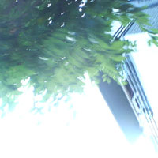 |
#青山図書館の近く
|
| 2004.6 / 2004.9 |
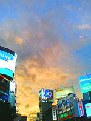
#更新が無かったのは何故かというと、３ヶ月前の電話代を払い忘れてたら電話回線を解約されてたために家でインターネット出来なくなったためです。| 06:31 深夜バスで京都についた。 眠い | |
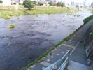 |
06:53 ぽてぽて歩いて鴨川。 とりあえず四条辺りを目指して川上へ。 半裸のおっさんがランニングしてた。 |
| 07:58 まだ歩いてます。 とりあえず置石で渡れる所が有ったので渡ってみました。 親子が水辺で遊んでて良さげな感じ。 | |
| 08:18 疲れたので、鴨川沿いのベンチで寝てる。 （本気で2時間以上寝てた） | |
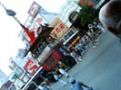 |
11:39 起きたら祇園祭のトンがったヤツが歩いてた。 その後ササキさんなどと合流。 |
| 13:21 お好み焼きとビールとビール。 | |
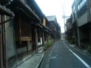 |
14:51 宿に荷物置きに行く途中、迷った。 |
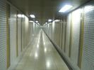 |
15:16 四条河原駅の入り口入ったらやたらと遠かった。 電車に乗って出町柳駅へ。 |
| 18:55 ライヴの合間。会場があまりに暑いので外でダレてる途中。 ライヴの話はこちら ラストの菊地成孔カルテット+UAが凄い良かった。いやほんとに。 ライヴ後は酒飲みに行って寝た。 | |
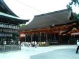 |
10:45 二日目。隣の部屋の「デカレンジャー」の爆音で目を覚ます。 とりあえず起きて自転車借りて、八坂神社へ。 |
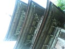 |
11:26 清水寺のなんとか塔。 外人が沢山。 |
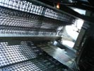 |
12:02 何故か京都駅。余りにサイバーな感じが。 |
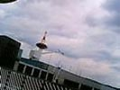 |
12:09 とりあえず京都駅の一番上まで上って見た。 何にも無い。 |
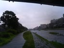 |
14:20 再び鴨川。自転車で走ってたら急に大雨降ってきた。 浮浪者のおっさんと雨宿り。 |
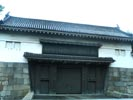 |
15:18 二条城。中には入んなかったけど。 |
| 15:20 二条城の近くの道端の向日葵。 今年初めて見た。 | |
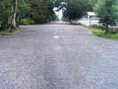 |
15:29 京都御苑、凄く広い。 |
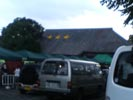 |
16:03 西部講堂アゲイン、ライヴのことはこちら ROVO終了後には滝壷で修行したよーにビショ濡れに。 |
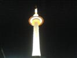 |
22:54 再び京都駅。バス待ち。 |
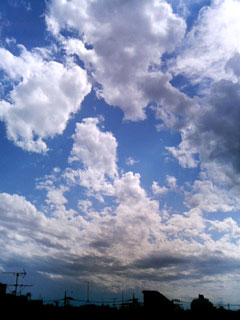
#土曜日。佳村萌さんのソロでてるかなぁー？と思って再びgalleryユイットへ。なんだかこの日届くはずだったのが届かなかったとかで、残念なあら入手できず。| Apple | iPod mini | 4GB | iTuneで転送 | \26,980 | Apple嫌い |
| Creative | Nomad MuVo2 | 4GB | ストレージ○ | \23,900 | 容量小さい |
| Apple | iPod | 15GB | iTuneで転送 | \30,500 | Apple嫌い |
| Creative | Nomad Zen | 30GB | ストレージ× | \26,700 | ストレージ使えれば... |
| iRiver | H120 | 20GB | ストレージ○/OGG | \35,980 | うーむ |
| Vertexlink | iAUDIO M3 | 20GB | ストレージ○/OGG | \41,370 | ちょい高め |
| Toshiba | gigabeat G21 | 20GB | mp3は書き戻し× | \38,000 | うーむ |
| Rio | Karma | 20GB | OGG/FLAC Ether接続可 |
\29,408 | 壊れやすいとか |
| IO Data | Grandisk | 40GB | mp3は書き戻し× SDカード |
\37,680 | でかすぎ (ポータブルストレージか) |